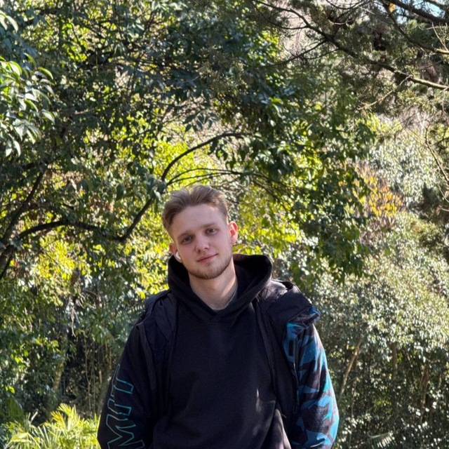

ЗНАНИЯ
- Основные этапы разработки ПО
- Системы управления базами данных
- Системы контроля версий Git
- Оформление документации
- Принципы ООП и структурного программирования
09.02.07 "Информационные системы и программирование"
ОК 01 Выбирать способы решения задач профессиональной деятельности применительно к различным контекстам;
ОК 02 Использовать современные средства поиска, анализа и интерпретации информации и информационные технологии для выполнения задач профессиональной деятельности;
ОК 03 Планировать и реализовывать собственное профессиональное и личностное развитие, предпринимательскую деятельность в профессиональной сфере, использовать знания по правовой и финансовой грамотности в различных жизненных ситуациях;
ОК 04 Эффективно взаимодействовать и работать в коллективе и команде;
ОК 05 Осуществлять устную и письменную коммуникацию на государственном языке Российской Федерации с учетом особенностей социального и культурного контекста;
ОК 06 Проявлять гражданско-патриотическую позицию, демонстрировать осознанное поведение на основе традиционных российских духовно-нравственных ценностей, применять стандарты антикоррупционного поведения;
ОК 07 Содействовать сохранению окружающей среды, ресурсосбережению, применять знания об изменении климата, принципы бережливого производства, эффективно действовать в чрезвычайных ситуациях;
ОК 08 Использовать средства физической культуры для сохранения и укрепления здоровья в процессе профессиональной деятельности;
ОК 09 Пользоваться профессиональной документацией на государственном и иностранном языках;
ПК 1.1. Формировать алгоритмы разработки программных модулей в соответствии с техническим заданием;
ПК 1.2. Разрабатывать программные модули в соответствии с техническим заданием;
ПК 1.3. Выполнять отладку программных модулей с использованием специализированных программных средств;
ПК 1.4. Выполнять тестирование программных модулей;
ПК 1.5. Осуществлять рефакторинг и оптимизацию программного кода;
ПК 1.6. Разрабатывать модули программного обеспечения для мобильных платформ;
ПК 2.1. Разрабатывать требования к программным модулям на основе анализа проектной и технической документации;
ПК 2.2. Выполнять интеграцию модулей в программное обеспечение;
ПК 2.3. Выполнять отладку программного модуля с использованием специализированных программных средств;
ПК 2.4. Осуществлять разработку тестовых наборов и тестовых сценариев для программного обеспечения;
ПК 2.5. Производить инспектирование компонент программного обеспечения на предмет соответствия стандартам кодирования;
ПК 4.1. Осуществлять инсталляцию, настройку и обслуживание программного обеспечения компьютерных систем;
ПК 4.2. Осуществлять измерения эксплуатационных характеристик программного обеспечения компьютерных систем;
ПК 4.3. Выполнять работы по модификации отдельных компонент программного обеспечения;
ПК 4.4. Обеспечивать защиту программного обеспечения компьютерных систем программными средствами;
ПК 11.1. Осуществлять сбор, обработку и анализ информации для проектирования баз данных;
ПК 11.2. Проектировать базу данных на основе анализа предметной области;
ПК 11.3. Разрабатывать объекты базы данных в соответствии с результатами анализа предметной области;
ПК 11.4. Реализовывать базу данных в конкретной системе управления базами данных;
ПК 11.5. Администрировать базы данных;
ПК 11.6. Защищать информацию в базе данных с использованием технологии защиты информации;
ДПК 2.1 Использование системного анализа и методологий проектирования, UML, MVC, фреймворков и шаблонов проектирования;
ДПК 2.2 Работа с системой контроля версий.
Глава 1
Давай знакомиться! ^_^
Я начинающий программист 4-го курса технического училища ЕКТС.
Привет, меня зовут Андрей! В свои 19 лет я активно изучаю программирование и уже овладел C#, Kotlin, базовыми знаниями SQL, HTML и CSS, могу работать с VisualStudio, создавать мобильные приложения Android Studio и MAUI. Сейчас я начал изучать C++. Моя цель - стать опытным разработчиком и внести свой вклад в развитие IT-сферы.

Успех - это идти от неудачи к неудаче, не теряя энтузиазма.
Уинстон Черчилль
Глава 2
Как проходит моя внеурочная деятельность.
Все документы можно посмотреть перейдя по кнопке
Я всегда выберу ленивого человека для выполнения сложной работы, потому что он найдет легкий путь ее выполнения.
Билл Гейтс
Глава 3
Что?! Оно работает?!
O.O
Проекты написанные на языке C#.
ПосмотретьПроекты написанные на языке Kotlin в Android Studio.
ПосмотретьМои работы написанные на языке SQL.
ПосмотретьЯ благодарен всем тем, кто сказал мне "Нет".
Именно благодаря им я чего-то добился сам.
Альберт Эйнштейн
Глава 4
Участие в КВИЗ-игре, посвященная Дню российского студенчества
Участие в сборах по теме "Средства индивидуальной защиты"
Сертификаты, награды, снимки с событий, способствующие формированию ценностного отношения учащихся к своей стране - России, её населению, уникальному прошлому, богатой природе и выдающейся культуре.
Посмотреть